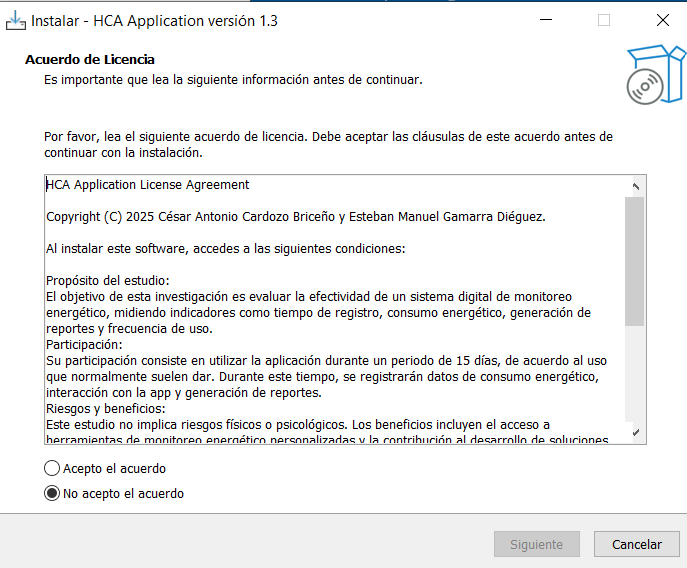

Paso 1: Ejecutar Instalador
Hacer doble clic en el archivo instalador.

Hacer doble clic en el archivo instalador.
Si ves esta advertencia de Windows, haz clic en "Más información" y luego en "Ejecutar de todas formas".

Selecciona "Sí" cuando Windows pregunte si deseas permitir cambios.
Acepta los términos y haz clic en "Next".
Deja la ubicación por defecto y haz clic en "Next".

Mantén la opción predeterminada y haz clic en "Next".

Haz clic en "Install" para comenzar.
Nota: No cierres el instalador durante este proceso.
Espera unos minutos hasta que se complete la instalación.

Haz clic en "Finish" para cerrar el instalador.

Busca el ícono en la bandeja del sistema (junto al reloj).

Haz clic derecho sobre el ícono y selecciona "Login".

Introduce tu correo y contraseña, y haz clic en "Iniciar".

Si el login fue exitoso, verás una pantalla de sesión iniciada.